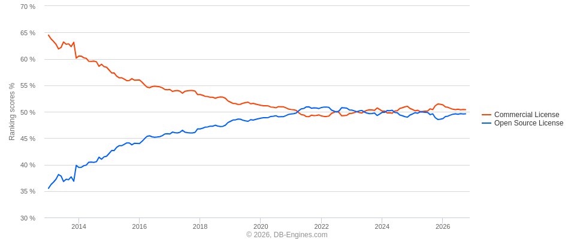

$ ssh conf-attendee@db-stack — welcome
We got RDS at home.
Building an enterprise-grade database stack
using only open source software
Nikos Segkos · FOSSCOMM 2026
25ish min talk + Q&A
Before we start
Safe harbor statement
- The views and opinions expressed in this talk are my own and do not necessarily reflect those of my employer or any organization I'm affiliated with.
- All trademarks, product names, and logos referenced are the property of their respective owners, and are used for identification purposes only.
- Figures and experiences shared are from specific workloads and environments; your results will vary.
- Nothing here constitutes production, legal, or financial advice — test everything in your environment before trusting it.
- No databases were harmed beyond repair during the making of this stack. Restores were verified.
$ whoami
Hi, I'm Nikos 👋
What I've been doing
- Database Reliability Engineer at Proton — 6 years
- Previously Oracle DBA at CERN
- ~10 years working with databases of all shapes and sizes
Why this talk
- I like databases more than is professionally advisable
- I believe the DB space is still lagging on OSS adoption and use
- I enjoy doing things the "hard" way
The state of play
Open source won the decade —
then got re-packaged

Source: DB-Engines Ranking Trend — db-engines.com
Increasingly, that software reaches you only through a managed wrapper.
Managed services are becoming the new closed source.
The pain
Where managed databases hurt
Money
Premium instances, storage, IOPS, snapshots, egress. Compounds with growth.
Freedom
Fixed sizes, engine versions, parameters — someone else decides.
Vendor lock-in
Migrating out is measured in quarters — and the door gets heavier.
Trust
Sometimes your prod data get leaked because your provider got breached — see the TiDB Cloud incident earlier this month.
The question is: "What does RDS actually do for you — and can you do it yourself?"
"
Just like the cloud is someone else's computer,
a managed service is just some guy™
doing it for you.
"
— ancient ops wisdom, origin unknown
Reverse-engineering RDS
What are you actually buying?
| Capability | What it means in practice |
|---|
| Database engine | MySQL (or Postgres, etc.), patched and version-managed |
| High availability | Replication, automated failover, a standby that takes over |
| Traffic routing | Two endpoints, read/write splitting, connections pooled via RDS Proxy |
| Backups & PITR | Snapshots, binlog retention, point-in-time recovery |
| Monitoring | Metrics, slow query visibility, alerts to a dashboard |
| Online maintenance | Schema changes and upgrades with minimal downtime |
None of these are magic. They're software. Software you can run.
The big idea
Six open source tools, one managed DB
| RDS capability | Open source tool | License |
|---|
| Database engine | MySQL | GPLv2 |
| Traffic routing & pooling | ProxySQL | GPLv3 |
| HA & automated failover | Orchestrator | Apache 2.0 |
| Hot backups & PITR | Percona XtraBackup | GPLv2 |
| Monitoring & observability | PMM (Percona Monitoring & Mgmt) | AGPL / Apache |
| Online schema changes | gh-ost | MIT* |
* Verify licenses against the versions you ship — check upstream LICENSE files.
The blueprint
The stack, end to end
Application
connect via DNS alias
▼
ProxySQL
routing · pooling · failover aware
▼
⟵ replicates ⟶
MySQL Replicas ×N
reads · candidates
Component 1 of 6
MySQL is fine, actually
- Still the "best" OLTP engine around
- GTID replication → every transaction gets a global ID
- Semi-sync replication → primary waits for a replica ack; but a dead replica doesn't take prod down
gtid_mode = ON
enforce_gtid_consistency = ON
rpl_semi_sync_source_enabled = 1
rpl_semi_sync_replica_enabled = 1
slow_query_log = ON
long_query_time = 0.5
Component 2 of 6
ProxySQL: one front door
- Connection pooling → thousands of client conns, a fraction on the backend
- Read/write split → queries hit hostgroups, not hosts
- Routing rules → analytics to a replica, users pinned anywhere
- Fast failure ejection → dead backends drained in milliseconds
INSERT INTO mysql_replication_hostgroups
(writer_hostgroup, reader_hostgroup)
VALUES (10, 20);
INSERT INTO mysql_users
(username, default_hostgroup)
VALUES ('app_rw', 10),
('svc_readonly', 20);
Component 2 of 6 — continued
ProxySQL meets failover
The trick
Apps talk to hostgroups, never hostnames. "Primary" is a job description, not an identity.
When a new primary is promoted, hostgroup membership changes. The app's connection string does not.
Why this beats a DNS hop
- No TTL roulette — routing flips at the proxy
- Health checks watch lag & read-only state
- Multiplexing prevents the reconnect stampede
Component 3 of 6
Orchestrator: your stack's map and brain
- Live topology discovery → polls replication, builds the graph
- Finds broken trees before you do
- Refactors topology online → move replicas, fix orphans, via UI or API
- Hooks everywhere → can re-point ProxySQL on failover
The topology view
cluster: prod-main
└─ mysql-primary01 ✔
├─ mysql-replica01 ✔ lag: 0s
├─ mysql-replica02 ✔ lag: 1s
└─ mysql-replica03 ⚠ lag: 340s
Live state, browsable, REST API.
Component 3 of 6 — the main event
Anatomy of an automated failover
| # | Step | Actor |
|---|
| 1 | Primary misses health checks → failure declared | Orchestrator |
| 2 | Best candidate picked: least lag, deepest lineage | Orchestrator |
| 3 | Replica promoted; others re-pointed to it | Orchestrator |
| 4 | New primary joins writer hostgroup | Orchestrator → ProxySQL |
| 5 | Alerts fire, audit trail recorded | Hooks / humans |
MTTR is now a property of your config, not an abstract idea.
Component 4 of 6
Percona XtraBackup: for all your backup needs
- Physical, hot → copies InnoDB files while serving traffic
- Consistent → snapshot + binlog position captured together
- Stream & compress → piped straight to object storage
- Incrementals → full weekly, incremental daily
xtrabackup --backup \
--target-dir=/backup/full
xtrabackup --prepare \
--target-dir=/backup/full
xtrabackup --backup --stream=xbstream \
| gzip | openssl enc ... \
| aws s3 cp - s3://bucket/mysql/
Component 4 of 6 — continued
Point-in-time recovery
How PITR works
Restore the last physical backup → replay binlogs from the recorded position → stop at the exact timestamp of regret.
mysqlbinlog --start-position=… | mysql
What RDS was doing quietly
Binlog retention and storage is now your pipeline. Gaps in binlogs are gaps in your recovery story.
A backup you have never restored is just a concept.
Drill restores before you need to do one during a prod incident.
Component 5 of 6
PMM: for all your observability needs
- Curated Grafana dashboards → MySQL, OS, replication, ProxySQL
- Query Analytics → slow queries ranked, trended, digest-level
- Replication lag visibility → feeds routing & alerting
- Self-hosted → query texts stay in your perimeter
Your morning dashboard
✔ replication lag: all nodes < 2s
✔ QPS steady vs 7-day baseline
⚠ top digest: SELECT ... ORDER BY RAND() 😬
✔ ProxySQL pool: 94% cached
Half of ops is noticing early.
Component 6 of 6
gh-ost — schema changes, no drama
- Migrates via binlog streaming → shadow table, no triggers, nothing extra on the hot path
- Throttles against your workload → production traffic always wins
- Interactive cutover → inspect, pause, resume, or bail anytime
- Big ALTERs in daylight
gh-ost \
--database=billing \
--table=invoices \
--alter="ADD COLUMN region CHAR(2)" \
--allow-on-master \
--max-load=Threads_running=50
...
echo throttle | socat ...
The receipt
What you just adopted
| RDS does this invisibly | Your problem now |
|---|
| Engine patching & CVE response | You track, test, and roll patches |
| Version upgrades | You orchestrate rolling / replica-swap upgrades |
| Backups that "just happen" | You build the pipeline and the drill calendar |
| Support escalation | You're the escalation. Community + stubbornness |
| Capacity headroom | You plan growth before it hurts |
| Change management | You prove to auditors the knobs are controlled |
This stack is a team capability, not a weekend script.
Some tips
These still apply regardless of what your stack ends up looking like
- Build the monitoring first. PMM goes in before the fancy failover.
- Rehearse failure on purpose. Kill the primary in staging weekly until failover is routine.
- Hostgroups over hostnames, everywhere. One hardcoded server name = one lost limb.
- Backups are a restore product. Ship the pipeline and the drill in the same PR.
- The hard part was never the software. Adopting a coherent process around all these tools is the real challenge
Steal this stack
Everything referenced today
| Tool | Home |
|---|
| MySQL | github.com/mysql/mysql-server |
| ProxySQL | github.com/sysown/proxysql |
| Orchestrator | github.com/proxysql/orchestrator |
| XtraBackup | github.com/percona/percona-xtrabackup |
| PMM | github.com/percona/pmm |
| gh-ost | github.com/github/gh-ost |
Slides: https://github.com/nksegos/slides/tree/main/fosscomm2026/deck.pdf
// exit code 0
You've had RDS at home
the whole time.
Questions?
Nikos Segkos · nikos@server-down.com
Thank you — and may your failovers be boring